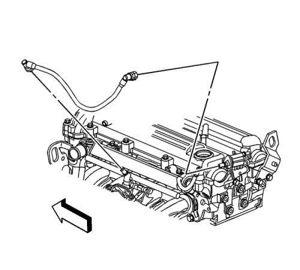

Captiva
Sustitución del sensor de presión absoluta del colector — LE5 o LE9
Procedimiento de desmontaje
Retire el conducto de salida del purificador de aire. Consultar
Sustitución del conducto de salida del filtro de aire
:
LE5 o LE9

Desmonte el tubo de purga del depósito de emisión de vapores (EVAP) del colector de admisión. Consultar
Reparación del cierre rápido con collar de plástico
.
Coloque el tubo de purga del depósito EVAP fuera de su posición.
Desconecte y coloque el mazo de cables del inyector de combustible fuera de su posición.
Desconecte el conector eléctrico del mazo de cables del motor del sensor de presión absoluta del colector (MAP).
Extraiga el sensor MAP y la junta.
Procedimiento de montaje
Lubrique la NUEVA junta del sensor MAP con aceite de motor limpio.
Monte el sensor MAP en el colector de admisión.
Emborne el conector eléctrico del mazo de cables del motor con el sensor MAP.
Coloque y conecte el mazo de cables del inyector de combustible.
Coloque el tubo de purga del depósito EVAP en el colector de admisión.
Conecte el tubo de purga del depósito EVAP en el colector de admisión. Consultar
Reparación del cierre rápido con collar de plástico
.
Monte el conducto de salida del filtro de aire. Consultar
Sustitución del conducto de salida del filtro de aire
:
LE5 o LE9
© Copyright Chevrolet Europe. All rights reserved